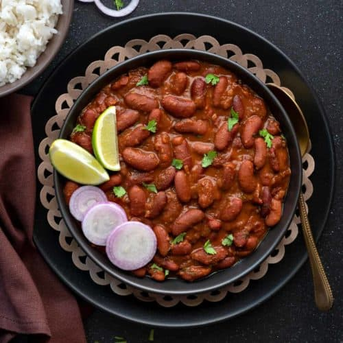
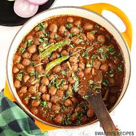
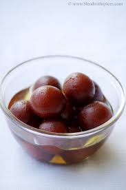
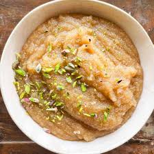

Paneer Butter Masala
Ingredients: Paneer cubes, tomato puree, onion chopped, ginger-garlic paste, cream, garam masala, red chili powder, sugar, salt, butter, cook onion and tomato base, add spices and cream, mix paneer, simmer.
|
Rajma (Kidney Bean Curry)Ingredients: Kidney beans soaked overnight, onions chopped, tomatoes pureed, ginger-garlic paste, cumin seeds, coriander powder, garam masala, salt, oil, fresh coriander, pressure cook rajma, cook onion-tomato masala, add rajma, simmer, garnish.
|
Masala Dosa with Potato Filling
Ingredients: Boiled potatoes mashed, onion sliced, mustard seeds, green chili chopped, turmeric, curry leaves, salt, oil, dosa batter (rice, urad dal soaked and fermented), prepare potato masala, spread dosa, add filling, fold and serve.
|
Chole (Chickpea Curry)Ingredients: Chickpeas soaked overnight, onions chopped, tomatoes pureed, ginger-garlic paste, chole masala, cumin seeds, turmeric, red chili powder, salt, oil, fresh coriander, pressure cook chickpeas, sauté onions and spices, add puree, mix chickpeas, simmer, garnish.
|
Gulab Jamun (Sweet Dessert)Ingredients: Milk powder, all-purpose flour, baking soda, ghee, milk (to knead), oil/ghee for frying, sugar, water, cardamom pods, saffron strands, make dough, fry balls, prepare syrup, soak and serve warm.
|
Suji Halwa (Semolina Pudding):Ingredients: Suji (semolina), ghee, sugar, water, cardamom powder, chopped cashews, almonds, raisins, heat ghee, roast suji till golden, boil water and sugar separately, add to roasted suji, stir continuously, add cardamom and dry fruits, cook till thick and aromatic.
|